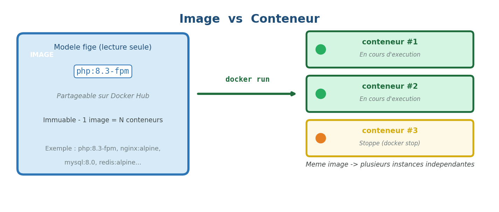
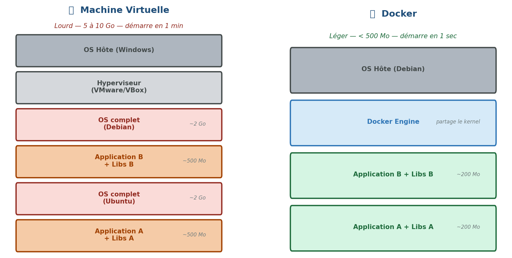
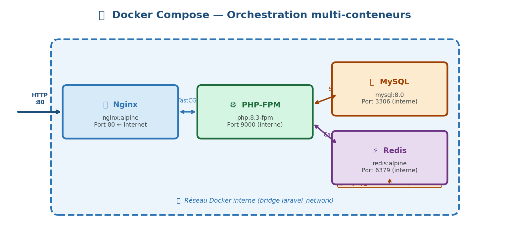
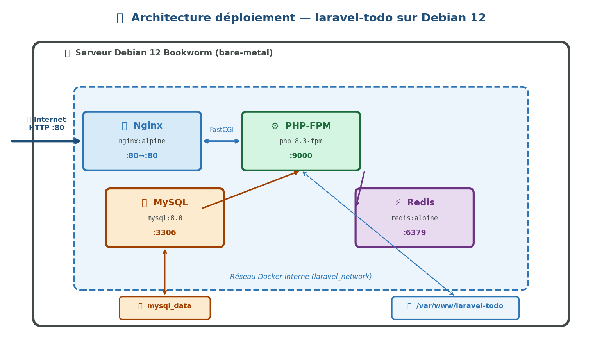
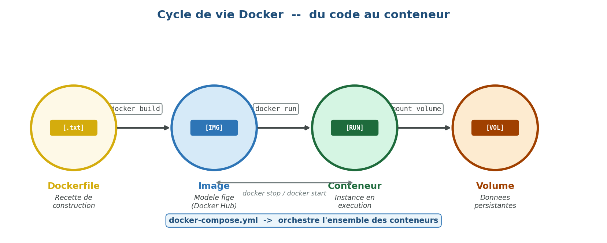

CI - Déploiement avec 🐳 Docker⚓︎

🎯 Objectifs du TP
Déployer une application Laravel en production
- 🗣️ Expliquer ce qu'est Docker et pourquoi on l'utilise
- 🔍 Comprendre l'architecture conteneur vs machine virtuelle
- 📝 Lire et écrire un
Dockerfilepour une application PHP/Laravel - 🎼 Orchestrer plusieurs services avec
docker-compose - 🚀 Déployer l'application
laravel-todosur un serveur Debian
1. 🤔 Pourquoi Docker ? Le problème du "ça marche chez moi"⚓︎
1.1 Le problème classique⚓︎
Vous avez développé votre application Laravel sur votre PC Windows. Tout fonctionne. Vous la transmettez à votre collègue sous Ubuntu : ❌ erreur. Vous la déployez sur le serveur de production : ❌ encore une erreur.
Les causes sont toujours les mêmes :
| 💻 Environnement | 🐘 PHP | 🐬 MySQL | 🟢 Node |
|---|---|---|---|
| Votre PC | 8.3 | 8.0 | 20 |
| PC collègue | 8.1 | 5.7 | 18 |
| Serveur prod | 8.2 | 8.4 | 22 |
💡 Docker résout ce problème en embarquant l'application ET son environnement dans une unité portable appelée conteneur.
1.2 🚢 La métaphore du conteneur maritime⚓︎
Avant les conteneurs maritimes (années 1950), chaque marchandise nécessitait un conditionnement spécifique. Charger/décharger un bateau prenait des semaines. Avec le conteneur standardisé : n'importe quelle marchandise, n'importe quel port, n'importe quel navire.
Docker applique exactement cette idée au logiciel : votre app + son environnement = un conteneur portable.
2. 🧱 Les concepts fondamentaux⚓︎
2.1 📦 Image vs Conteneur⚓︎

- Une image est un modèle figé, en lecture seule. Elle décrit l'OS, les dépendances, le code.
- Un conteneur est une instance en cours d'exécution d'une image. On peut en lancer plusieurs à partir de la même image.
- 🔑 Analogie : l'image est la recette de cuisine, le conteneur est le plat préparé.
2.2 🖥️ Docker vs Machine Virtuelle⚓︎

Points clés : - ❌ La VM virtualise le matériel → chaque VM a son propre OS complet (~2 Go chacun) - ✅ Docker virtualise l'OS → les conteneurs partagent le kernel de l'hôte - ⚡ Un conteneur démarre en < 1 seconde ; une VM en 30-60 secondes - 💾 Une VM pèse 5-10 Go ; un conteneur quelques dizaines de Mo
2.3 📝 Le Dockerfile⚓︎
Le Dockerfile est le fichier texte qui décrit comment construire une image. C'est la recette de construction.
# Instruction de base : on part d'une image existante
FROM php:8.3-fpm
# On exécute des commandes dans l'image
RUN apt-get update && apt-get install -y libpng-dev
# On copie des fichiers de notre machine vers l'image
COPY . /var/www/html
# On expose un port réseau
EXPOSE 9000
# La commande lancée au démarrage du conteneur
CMD ["php-fpm"]
Instructions essentielles :
| 🔧 Instruction | Rôle |
|---|---|
FROM |
🏗️ Image de base (obligatoire, toujours en premier) |
RUN |
⚙️ Exécute une commande pendant la construction |
COPY |
📋 Copie des fichiers locaux dans l'image |
WORKDIR |
📁 Définit le dossier de travail courant |
ENV |
🌍 Définit une variable d'environnement |
EXPOSE |
🔌 Documente le port écouté |
CMD |
▶️ Commande par défaut au démarrage |
ENTRYPOINT |
🎯 Point d'entrée (non surchargeable facilement) |
2.4 🎼 Docker Compose — Orchestrer plusieurs conteneurs⚓︎
Une application Laravel complète nécessite plusieurs services qui doivent communiquer entre eux :

Docker Compose orchestre tout ça avec un seul fichier docker-compose.yml. Une seule commande pour démarrer toute la stack.
3. 🏗️ Architecture de notre déploiement⚓︎
3.1 Vue d'ensemble⚓︎
Pour déployer laravel-todo, nous allons utiliser 4 conteneurs :

🔒 Sécurité : seul le port 80 de Nginx est exposé à l'extérieur. MySQL (:3306) et Redis (:6379) restent isolés dans le réseau Docker interne — inaccessibles depuis Internet.
3.2 🗂️ Rôle de chaque service⚓︎
| 🐳 Service | 📦 Image de base | 🎯 Rôle |
|---|---|---|
app |
php:8.3-fpm |
⚙️ Exécute le code PHP Laravel |
nginx |
nginx:alpine |
🌐 Serveur web, reverse proxy vers PHP |
mysql |
mysql:8.0 |
🗄️ Base de données |
redis |
redis:alpine |
⚡ Cache sessions/queues |
4. 🔨 Construction de l'environnement Docker⚓︎
4.1 📁 Structure des fichiers⚓︎
laravel-todo/
├── 🐳 docker/
│ ├── nginx/
│ │ └── default.conf # Config Nginx
│ └── php/
│ └── local.ini # Config PHP
├── 📝 Dockerfile # Image PHP personnalisée
├── 🎼 docker-compose.yml # Orchestration des services
├── 🏭 docker-compose.prod.yml # Surcharges pour la production
├── 🔐 .env # Variables d'environnement
└── 🚫 .dockerignore # Fichiers à exclure de l'image
4.2 🐘 Le Dockerfile PHP⚓︎
# docker/Dockerfile
FROM php:8.3-fpm
# ── Dépendances système ──────────────────────────────────
RUN apt-get update && apt-get install -y \
git \
curl \
libpng-dev \
libonig-dev \
libxml2-dev \
libzip-dev \
zip \
unzip \
&& docker-php-ext-install \
pdo_mysql \
mbstring \
exif \
pcntl \
bcmath \
gd \
zip \
&& pecl install redis \
&& docker-php-ext-enable redis \
&& apt-get clean \
&& rm -rf /var/lib/apt/lists/*
# ── Composer ────────────────────────────────────────────
COPY --from=composer:latest /usr/bin/composer /usr/bin/composer
# ── Node.js (pour Vite/assets) ───────────────────────────
RUN curl -fsSL https://deb.nodesource.com/setup_20.x | bash - \
&& apt-get install -y nodejs
# ── Répertoire de travail ────────────────────────────────
WORKDIR /var/www/html
# ── Droits ──────────────────────────────────────────────
RUN chown -R www-data:www-data /var/www/html
USER www-data
EXPOSE 9000
CMD ["php-fpm"]
⚠️ Point important : On regroupe les
RUNen une seule commande avec&&pour minimiser le nombre de layers (couches) dans l'image. Chaque instructionRUNcrée une couche — moins il y en a, plus l'image est légère.
4.3 🌐 Configuration Nginx⚓︎
# docker/nginx/default.conf
server {
listen 80;
server_name _;
root /var/www/html/public;
add_header X-Frame-Options "SAMEORIGIN";
add_header X-Content-Type-Options "nosniff";
index index.php;
charset utf-8;
# Toutes les requêtes → index.php (routing Laravel)
location / {
try_files $uri $uri/ /index.php?$query_string;
}
# Traitement des fichiers PHP → PHP-FPM
location ~ \.php$ {
fastcgi_pass app:9000; # "app" = nom du service Docker
fastcgi_param SCRIPT_FILENAME $realpath_root$fastcgi_script_name;
include fastcgi_params;
}
# Blocage des fichiers .htaccess
location ~ /\.ht {
deny all;
}
}
4.4 🎼 Le fichier docker-compose.yml⚓︎
# docker-compose.yml
version: '3.8'
services:
# ── Application PHP-FPM ──────────────────────────────
app:
build:
context: .
dockerfile: docker/Dockerfile
container_name: laravel_app
restart: unless-stopped
volumes:
- .:/var/www/html # Code source monté en volume
- ./docker/php/local.ini:/usr/local/etc/php/conf.d/local.ini
networks:
- laravel_network
depends_on:
- mysql
- redis
# ── Serveur Web Nginx ────────────────────────────────
nginx:
image: nginx:alpine
container_name: laravel_nginx
restart: unless-stopped
ports:
- "80:80" # Port hôte:port conteneur
volumes:
- .:/var/www/html
- ./docker/nginx/default.conf:/etc/nginx/conf.d/default.conf
networks:
- laravel_network
depends_on:
- app
# ── Base de données MySQL ────────────────────────────
mysql:
image: mysql:8.0
container_name: laravel_mysql
restart: unless-stopped
environment:
MYSQL_DATABASE: ${DB_DATABASE}
MYSQL_ROOT_PASSWORD: ${DB_PASSWORD}
MYSQL_PASSWORD: ${DB_PASSWORD}
MYSQL_USER: ${DB_USERNAME}
volumes:
- mysql_data:/var/lib/mysql # Volume nommé pour la persistance
networks:
- laravel_network
# ── Cache Redis ──────────────────────────────────────
redis:
image: redis:alpine
container_name: laravel_redis
restart: unless-stopped
networks:
- laravel_network
# ── Volumes nommés (persistants) ─────────────────────
volumes:
mysql_data:
driver: local
# ── Réseau interne ────────────────────────────────────
networks:
laravel_network:
driver: bridge
4.5 🚫 Le .dockerignore⚓︎
# .dockerignore
node_modules
vendor
.git
.env
*.log
storage/logs/*
storage/framework/cache/*
storage/framework/sessions/*
🔑 Pourquoi c'est important ? Sans
.dockerignore,vendor/(200+ Mo) etnode_modules/seraient copiés dans l'image à chaque build — le build prendrait plusieurs minutes inutilement.
5. 🔐 Variables d'environnement et sécurité⚓︎
5.1 Le fichier .env pour Docker⚓︎
# .env (à NE JAMAIS committer sur Git)
APP_NAME=LaravelTodo
APP_ENV=production
APP_KEY= # Généré par php artisan key:generate
APP_DEBUG=false
APP_URL=http://votre-ip-serveur
DB_CONNECTION=mysql
DB_HOST=mysql # ← Nom du service Docker, pas "localhost"
DB_PORT=3306
DB_DATABASE=laravel_todo
DB_USERNAME=laravel_user
DB_PASSWORD=motdepasse_solide_ici
CACHE_DRIVER=redis
SESSION_DRIVER=redis
QUEUE_CONNECTION=redis
REDIS_HOST=redis # ← Nom du service Docker
REDIS_PORT=6379
🔒 Sécurité DevOps :
DB_HOST=mysqletREDIS_HOST=redis: ce sont les noms des services définis dansdocker-compose.yml. Docker crée un DNS interne qui résout ces noms. Les conteneurs communiquent entre eux sans exposer les ports à l'extérieur.
5.2 ❌ Jamais de secrets dans le Dockerfile ou docker-compose.yml⚓︎
# ❌ MAUVAIS — secret en clair dans le code versionné
environment:
MYSQL_ROOT_PASSWORD: monmotdepasse123
# ✅ BON — lecture depuis .env (non versionné)
environment:
MYSQL_ROOT_PASSWORD: ${DB_PASSWORD}
| 🚦 Pratique | Risque |
|---|---|
Secret en clair dans docker-compose.yml |
❌ Exposé sur GitHub à tous |
Secret dans le Dockerfile |
❌ Gravé dans les layers de l'image |
Secret dans .env (gitignore) |
✅ Sûr — jamais versionné |
| Secret dans un gestionnaire (Vault, Secrets) | ✅✅ Idéal en production réelle |
6. ⌨️ Commandes Docker essentielles⚓︎
6.1 🔄 Cycle de vie des conteneurs⚓︎
# 🚀 Construire les images et démarrer tous les services
docker compose up -d --build
# 👀 Voir les conteneurs en cours d'exécution
docker compose ps
# 📋 Voir les logs (temps réel)
docker compose logs -f
# 🔍 Logs d'un service spécifique
docker compose logs -f app
# ⏸️ Arrêter les conteneurs (sans supprimer)
docker compose stop
# 🛑 Arrêter ET supprimer les conteneurs
docker compose down
# ⚠️ Supprimer aussi les volumes (PERD LES DONNÉES BDD)
docker compose down -v
6.2 💻 Exécuter des commandes dans un conteneur⚓︎
# 🐚 Ouvrir un shell dans le conteneur PHP
docker compose exec app bash
# 🎨 Exécuter une commande artisan
docker compose exec app php artisan migrate
# 📦 Exécuter composer
docker compose exec app composer install --no-dev
# 🖼️ Exécuter npm (build assets Vite)
docker compose exec app npm run build
6.3 🗃️ Gestion des images⚓︎
# 📋 Lister les images locales
docker images
# 🗑️ Supprimer une image
docker rmi nom_image
# 🧹 Supprimer toutes les images inutilisées
docker image prune -a
# 💽 Voir l'espace disque utilisé par Docker
docker system df
7. 🚀 Déploiement sur le serveur Debian⚓︎
7.1 ✅ Prérequis sur le serveur⚓︎
Docker Engine et Docker Compose Plugin doivent être installés (voir le HowTo joint). Vérifiez :
docker --version # Docker version 27.x.x
docker compose version # Docker Compose version v2.x.x
7.2 📋 Procédure de déploiement complète⚓︎
# 1️⃣ Cloner le projet depuis GitHub
git clone https://github.com/votre-user/laravel-todo.git
cd laravel-todo
# 2️⃣ Créer le fichier .env de production
cp .env.example .env
nano .env # Remplir les variables (DB, APP_KEY, etc.)
# 3️⃣ Construire et démarrer les conteneurs
docker compose up -d --build
# 4️⃣ Initialiser l'application Laravel
docker compose exec app composer install --no-dev --optimize-autoloader
docker compose exec app php artisan key:generate
docker compose exec app php artisan migrate --force
docker compose exec app php artisan storage:link
docker compose exec app npm ci && docker compose exec app npm run build
docker compose exec app php artisan config:cache
docker compose exec app php artisan route:cache
docker compose exec app php artisan view:cache
# 5️⃣ Vérifier que tout tourne
docker compose ps
7.3 🔁 Mise à jour de l'application (workflow CI/CD simplifié)⚓︎
# Sur le serveur, dans le dossier du projet
git pull origin main
docker compose up -d --build
docker compose exec app composer install --no-dev --optimize-autoloader
docker compose exec app php artisan migrate --force
docker compose exec app php artisan config:cache
8. 🧠 Concepts avancés — Pour aller plus loin⚓︎
8.1 🧅 Les layers et le cache de build⚓︎
Docker construit les images en couches (layers). Chaque instruction du Dockerfile est une couche. Si une couche n'a pas changé, Docker réutilise le cache → le build est rapide.
# ✅ Optimisé : on copie d'abord les fichiers de dépendances
# Ces fichiers changent rarement → les couches sont cachées
COPY composer.json composer.lock ./
RUN composer install --no-scripts
COPY package.json package-lock.json ./
RUN npm ci
# On copie le code source EN DERNIER (change souvent)
COPY . .
💡 Conseil pro : mettez toujours le
COPY . .en dernier dans votre Dockerfile. Le code source change à chaque commit — si vous le copiez tôt, toutes les couches suivantes (composer install, npm ci...) sont invalidées et rebuiltées entièrement.
8.2 🏗️ Multi-stage build (image de production allégée)⚓︎
# ── Stage 1 : Build des assets ──────────────────────────
FROM node:20-alpine AS node_builder
WORKDIR /app
COPY package*.json ./
RUN npm ci
COPY . .
RUN npm run build
# ── Stage 2 : Image PHP finale ──────────────────────────
FROM php:8.3-fpm AS production
WORKDIR /var/www/html
# On copie UNIQUEMENT les assets compilés du stage précédent
COPY --from=node_builder /app/public/build ./public/build
# Le reste de l'installation...
✅ Avantage : L'image finale ne contient pas Node.js (300+ Mo économisés). Node n'est présent que pendant la construction, pas dans l'image de production.
8.3 💓 Healthchecks⚓︎
mysql:
image: mysql:8.0
healthcheck:
test: ["CMD", "mysqladmin", "ping", "-h", "localhost"]
interval: 10s
timeout: 5s
retries: 5
app:
depends_on:
mysql:
condition: service_healthy # Attend que MySQL soit prêt
⚠️ Sans healthcheck,
apppeut démarrer avant que MySQL soit prêt → erreur de connexion au démarrage.
9. 📋 Résumé — Ce que vous devez retenir⚓︎

📖 Vocabulaire à maîtriser⚓︎
| 📚 Terme | 📝 Définition |
|---|---|
| Image | 📦 Modèle immuable d'un conteneur |
| Conteneur | 🟢 Instance en cours d'exécution d'une image |
| Dockerfile | 📝 Fichier de construction d'une image |
| Docker Hub | ☁️ Registre public d'images |
| Layer / Couche | 🧅 Chaque instruction RUN/COPY crée une couche |
| Volume | 💾 Persistance de données hors du conteneur |
| Network | 🔌 Réseau virtuel entre conteneurs |
| docker-compose | 🎼 Outil d'orchestration multi-conteneurs |
| Registry | 🗄️ Dépôt d'images (public ou privé) |
⌨️ Commandes clés à retenir⚓︎
| Commande | Action |
|---|---|
docker compose up -d --build |
🚀 Construire et démarrer |
docker compose exec app bash |
💻 Entrer dans le conteneur |
docker compose logs -f |
📋 Surveiller les logs |
docker compose down |
🛑 Arrêter et supprimer |
docker compose ps |
👀 État des conteneurs |
docker system df |
💽 Espace disque Docker |
🔗 Ressources complémentaires⚓︎
- 📖 Documentation officielle Docker : https://docs.docker.com
- 📦 Docker Hub : https://hub.docker.com
- 🧪 Play with Docker (bac à sable en ligne) : https://labs.play-with-docker.com
- ⛵ Laravel Sail (alternative officielle) : https://laravel.com/docs/sail
- 🎓 Bret Fisher Udemy Course : Docker Mastery
📅 Cours réalisé pour le BTS SIO 2ème année — Module DevOps 🏗️ Projet support : laravel-todo — Déploiement sur serveur Debian 12